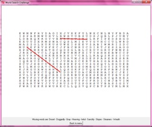
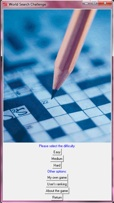
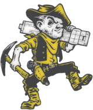

Projetos em Software

Bom, como todo aluno de computação da UFCG, desenvolvi vários projetos de desenvolvimento de software até agora durante a graduação. Também desenvolvi outros projetos que não necessariamente levaram a uma aplicação para entrar nessa lista (projetos em UML e/ou OCL; consultas e exercícios SQL; relatórios; projetos de análise e pesquisa; algoritmos implementados etc.). Entretanto, nesta página estarão disponíveis apenas aqueles mais marcantes, junto de uma breve explicação do que ele representou; qual o seu objetivo e outros detalhes técnicos. Não deixarei disponível o código fonte de algumas aplicações. Caso queira ter acesso, sinta-se a vontade para me contatar via email.
As a Computer Science student at Federal University of Campina Grande (UFCG) I have been developing some software projects for the courses I have been taking during graduation. I have also developed other projects that did not result in applications (UML modeling; OCL constraints; reports; reserach and investigation projects; SQL queries and exercises - procedures, triggers etc. - ; algorithms implementation; etc.). This page, therefore, holds some of the applications I developed so far. You’ll find a small abstract of it’s background; objectives and technical details. I will not make the source code available, but if you wish, you can contact me through email and we can discuss it.
Meus Projetos
7 de janeiro de 2011
NeoSoft
1 de dezembro de 2010
O projeto NeoSoft foi desenvolvido para a disciplina Laboratório de Engenharia de Software. Esse projeto consiste em um sistema de informação para um cliente real (a clínica NEO - Núcleo Especializado em Oftalmologia) com objetivo de informatizar o setor de lentes e controle de lentes. Ele foi desenvolvido em Grails. Além de mim, o grupo de alunos consistia de Fabio de Sousa Leal e Renato Freitas.

O projeto SedareSoft foi desenvolvido para a disciplina Engenharia de Software. Esse projeto consiste em um sistema de informação para um cliente real (a clínica Sedare) com objetivo de informatizar todo o setor de atendimento aos pacientes. Ele foi desenvolvido em Grails. Além de mim, o grupo de alunos consistia de Fabio de Sousa Leal e Renato Freitas.
SedareSoft
1 de julho de 2010
NeoSoft project was developed as evaluation of the Software Engineering Laboratory course. It consists as an information system used for the ophthalmological clinic NEO. It automates the lens-selling department. It was developed in Grails with collaboration with Fabio de Sousa Leal and Renato Freitas.

SedareSoft project was developed as part of the evaluation of the Software Engineering course. It consists as an information system used for the complete operation control of the Sedare clinic. It automates all patients relation department . It was developed in Grails with collaboration with Fabio de Sousa Leal and Renato Freitas.
O projeto RubySweeper foi desenvolvido como parte da avaliação da disciplina Paradigmas de Linguagens de Programação. Ele consiste em um campo minado onde o jogador joga contra o computador (um dos requisitos é que esse agente não fosse apenas reativo). Os jogadores alternam-se em turnos e o jogo acaba quando algum dos jogadores descobrir mais da metade das bombas ou elas acabarem. O jogo foi escrito na linguagem Ruby e a interface feita com a biblioteca Gosu em colaboração com Davi Serrano.
RubySweeper
5 de dezembro de 2009
RubySweeper project was developed as part of the evaluation of the Programming Languages Paradigms course. It consists of a minesweeper game where the user plays against the computer. Both user and computer alternate moves and the game ends either when a player discovers more than half of the bombs or they are over. It was written in Ruby, GUI made with Gosu library, in collaboration with Davi Serrano.

O projeto Be Mr. Holmes foi desenvolvido como parte da avaliação da disciplina Laboratório de Programação 2. Ele consiste em um joguinho estilo detetive no qual o jogador deve solucionar um crime, dentro de condições pré-definidas de acordo com o nível de habilidade do jogador, a partir de uma série de pistas que são achadas em diferentes locais da cidade. O nível de dificuldade cresce com o decorrer do tempo de jogo e da quantidade de crimes solucionados pelo jogador. O projeto foi desenvolvido em Java e a interface gráfica feita em Swing. O grupo era formado, além de mim, por: Amaury Medeiros; Davi Serrano e José Laerte Xavier.
Be Mr. Holmes (DOWNLOAD LINK)
28 de novembro de 2008
Be Mr. Holmes project was developed as part of the evaluation of the Programming 2 Laboratory course. It consists of a detective game where the user plays the hole of a police detective and needs to solve a crime, within certain conditions that vary with the user’s ability and rank, based on tips gathered in different places of the city. Difficulty levels rise when the user gets more experienced and solves more crimes. It was written in Java, having it’s GUI written in Swing, in collaboration with Amaury Medeiros; Davi Serrano; José Laerte Xavier.


O projeto Word Search Challenge (ou WSC, para facilitar) foi desenvolvido como parte da avaliação da disciplina Laboratório de Programação 1. Ele consiste em um jogo de caça-palavras jogado individualmente no qual o jogador deve solucionar um puzzle a partir de uma lista de palavras sorteadas de acordo com o nível de dificuldade escolhido. Os usuários que resolverem em menos tempo entrarão para um ranking (dividido pelos rankings de dificuldade). O projeto foi desenvolvido em Python e a interface gráfica feita com a biblioteca TKinter em colaboração com Raíssa Sarmento.
Word Search Challenge (DOWNLOAD LINK)
10 de julho de 2008
The Word Search Challenge project was developed as part of the evaluation of the Programming 1 Laboratory course. It consists of a word search puzzle where the user has to find a list of words hidden inside a matrix of letters. Hidden words vary within the selected difficulty level. Users who solve the puzzle in less time than the previous ranked, reach the new ranking (according to the selected difficulty level). The game was written in Python, having it’s GUI written in TKinter. The project was developed in collaboration with Raíssa Sarmento.




NIkkeyMedical
13 de janeiro de 2011
O projeto NikkeyMedical foi desenvolvido por mim durante as férias de início de ano como forma de aprimorar o conhecimento em Grails. Esse projeto consiste em um sistema de informação para a clínica Nikkey com objetivo de informatizar o setor de atendimento e relacionamento com o cliente. O projeto foi desenvolvido solo, mas com contribuição indireta de Fabio de Sousa e Renato Freitas.
NikkeyMedical project was developed for the Nikkey clinic. It was developed by me during university holidays as a mean of acquring deeper skills in Grails. It consists as an information system used for internal and external operation with costumers. It was developed in Grails with indirect collaboration of Fabio de Sousa Leal and Renato Freitas.


Medidor de controle de tensão
5 de dezembro de 2011
O projeto Medidor de Controle de Tensão (MCT) é o projeto desenvolvido para a disciplina Projeto em Computação 1 da UFCG. Ele consiste em um sistema para monitoramento das tensões dos barramentos em tempo real e análise em pós operação. Seu objetivo é notificiar operadores das anormalidades detectadas e gerenciar as justificativas e/ou ações para tratar de suas anormalidades. Ele funcionará no âmbito da CTEP. Está em desenvolvimento em conjunto com José Rafael Farias e Renato Almeida.
MCT (porguese-named) project is being developed as graduation project. It is aimed at monitoring in real-time transmition lines and notifing CTEP operations of anomalies and violations detected. It also manages justifications and actions for solving this issues. It’s modules are developed both in C (it’s main core that deals with lines tensions and values) and Java (for graphical interface and web management). It is being developed in collaboration with José Rafael Farias and Renato Almeida.
OCL-JML Compiler (ocl-jml compiler.zip)
6 de junho de 2011
O compilador de OCL para JML foi desenvolvido como projeto da disciplina Compiladores. Ele consiste em um tradutor para transformar pré e pós condições escritas em OCL para expressões JML. Para isso, também recebe como entrada um diagrama de classes sobre o qual serão especificados as restrições. Foi desenvolvido com auxílio de ferramentas como o JFlex, o CUP e é escrito em Java.
OCL-JML compiler was developed as part of the evaluation of the Compilers course. It’s a OCL pre and post conditions translator to JML. For semantics analysis along with source files, it receives a UML class diagram as input. It was developed in collaboration with José Rafael Farias and Renato Almeida.

GEOEATING
11 de junho de 2011
O projeto GeoEating foi um projeto concebido para a disciplina Sistemas de Informações Geográficas. Sua ideia é simples e interessante. Ele consiste em referenciar todos os restaurantes de um lugar através de um mapa (tipicamente no browser web através do google maps) e mostrar informações sobre aquele restaurante naquele momento. Também são disponíveis informações mais elaboradas, como cálculo de rodas. Em colaboração com: Adalberto Teixeira; Davi Serrano; José Rafael Farias e Renato Almeida.
GeoEating project was developed as part of the evaluation of the Geographical Informations Systems course. It’s ideia is to locate in a map (google maps) all the restaurants of a city and its information (such as food; amout of people waiting for a table etc.). It also offers some queries, such as routes; coverage area; best choice; most valuable places etc. It was developed in collaboration with: Adalberto Teixeira; Davi Serrano; José Rafael Farias and Renato Almeida. Uses features such as GeoServer; PostgresSQL (+ PostGIS) and google maps javascript api.
Router simulator
17 de junho de 2011
O simulador de um roteador foi um projeto desenvolvido para a disciplina Avaliação de Desempenho de Sistemas Discretos. Ele consiste em simular um roteador store-and-forward simples. Sua implementação fez uso de SimJava para geração das distribuições de probabilidade e do Applet. A parte mais interessante do projeto foi a validação estatística com base nas leis operacionais e a avaliação de desempenho com base na teoria das filas.
The simulator project was developed as part of the evaluation of the Discrete System Analysis and Performance course. It’s a simple store-and-forward router simulator based on some input parameters established by the user. It was validated by statistical analysed based on operational laws calculations and interval results confrontation. It’s performance was evaluated using queueing theory. It was developed using SimJava for probability distribuition generation and applet creationg. Collaboration with José Rafael Farias and Pedro Barbosa.


Analisador de Tweets
5 de dezembro de 2011
O projeto Analisador de Tweets foi o projeto da disciplina Inteligência Artificial I. Nele, nós (José Rafael, Renato Almeida e eu), treinamos e testamos um classificador de mensagens do Twitter. Esse classificador recebe como entrada uma mensagem escrita em português correto (sem erros ortográficos) e tenta analisar se é uma mensagem feliz ou triste. Foi um projeto muito interessante, pois trabalhamos tanto com um aparato teórico quanto ferramental novo.
The twitter analyzer project aimed at cathegorizing twitter messages’ language (portuguese written messages) either happy or sad. It was part of the evaluation of the Artificial Intelligence course and was developed in collaboration with José Rafael Farias and Renato Almeida.
